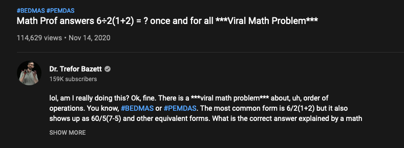

Basic R
Agenda
- Introduction to R
- Getting Started
- Variables and Reserved Keywords
- Data Types in R
- Operators
Common new users frustrations
- Different versions of software
- Data type problems (is that a character or a number?)
- Working directory problems: trying to read files that R “can’t find”
- RStudio can help, and so do RStudio Projects
- discuss in Data Input/Output lecture
- Typos (R is case sensitive,
xandXare different)- RStudio helps with “tab completion”
- discussed throughout
Explaining output
In slides, a command (we’ll also call them code or a code chunk) will look like this
print("Hello World!")[1] "Hello World!"And then directly after it, will be the output of the code.
So print("I'm code") is the code chunk and [1] “I’m code” is the output.
R as a calculator
2 + 2[1] 42 * 4[1] 82^3[1] 8Note: when you type your command, R inherently thinks you want to print the result.
R as a calculator
- The R console is a full calculator
- Try to play around with it:
- +, -, /, * are add, subtract, divide and multiply
- ^ or ** is power
- parentheses – ( and ) – work with order of operations
- %% finds the remainder
R as a calculator
2 + (2 * 3)^2[1] 38(1 + 3) / 2 + 45[1] 476 / 2 * (1 + 2)[1] 9
R as a calculator
Try evaluating the following:
2 + 2 * 3 / 4 -32 * 3 / 4 * 22^4 - 1
Commenting in Scripts
# creates a comment in R code
# this is a comment
# nothing to its right is evaluated
# this # is still a comment
### you can use many #'s as you want
1 + 2 # Can be the right of code[1] 3In an .Rmd file, you can write notes outside the R chunks.
Assigning values to objects
- You can create objects from within the R environment and from files on your computer
- R uses
<-to assign values to an object name (you might also see=used, but this is not best practice) - Object names are case-sensitive, i.e. X and x are different
x <- 2
x[1] 2x * 4[1] 8x + 2[1] 4Variables(Identifiers) in R
- Variables are used to store data, whose value can be changed according to our need.
- A variable is a name given to a memory location, which is used to store values in a computer program.
- Variables in R programming can be used to store numbers (real and complex), words, matrices, and even tables.
- R is a dynamically programmed language which means that unlike other programming languages, we do not have to declare the data type of a variable before we can use it in our program.
- Unique name given to variable (function and objects as well) is identifier.
Rules for writing Identifiers in R
- Identifiers can be a combination of letters, digits, period (.) and underscore (_).
- It must start with a letter or a period. If it starts with a period, it cannot be followed by a digit.
- It should not start with a number (e.g: 2x)
- It should not start with a dot followed by a number (e.g: .2x)
- It should not start with an underscore (e.g: _x)
- Reserved words in R cannot be used as identifiers(e.g: TRUE, FALSE)
Basically, there are 5 naming conventions - alllowercase: e.g. myname - period.separated: e.g. new.name - underscore_separated: e.g. my_name - lowerCamelCase: e.g. myName - UpperCamelCase: e.g. MyName
Creating Variables
Using equal(=) operator
x = 10 Using leftward(<-) operator
y <- 15 Reserved Keaywords in R
- Don’t use any reserved keyword as variable name. List all of reserved words in R by using (?Reserved).
?Reservedstarting httpd help server ... doneEntering Input
At the R prompt/console we type expressions.
num <- 10The <- symbol is the assignment operator. The grammar of the language determines whether an expression is complete or not.
Evaluation
When a complete expression is entered at the R console, it is evaluated and the result of evaluated expression is returned. The result may be auto-printed.
x <- 10
x[1] 10x <- 10
print(x)[1] 10x <- 10
cat(x)10Assigning values to objects
- The most comfortable and familiar class/data type for many of you will be
data.frame - You can think of these as essentially spreadsheets with rows (usually subjects or observations) and columns (usually variables)
data.frames are somewhat advanced objects in R; we will start with simpler objects
Assigning values to objects
- Here we introduce “1 dimensional” classes; often referred to as ‘vectors’
- Vectors can have multiple sets of observations, but each observation has to be the same class.
class(x)[1] "numeric"y <- "hello world!"
print(y)[1] "hello world!"class(y)[1] "character"Simple object practice
Try assigning your full name to an R object called name
Simple object practice
Try assigning your full name to an R object called name
name <- "Ava Hoffman"
name[1] "Ava Hoffman"The ‘combine’ function
The function c() collects/combines/joins single R objects into a vector of R objects. It is mostly used for creating vectors of numbers, character strings, and other data types.
x <- c(1, 4, 6, 8)
x[1] 1 4 6 8class(x)[1] "numeric"The ‘combine’ function
Try assigning your first and last name as 2 separate character strings into a single vector called name2
The ‘combine’ function
Try assigning your first and last name as 2 separate character strings into a length-2 vector called name2
name2 <- c("Ava", "Hoffman")
name2[1] "Ava" "Hoffman"Arguments inside R functions
- The contents you give to an R function are called “arguments”
- Here, R assumes all arguments should be objects contained in the vector
- We will talk more about arguments as we use more complicated functions!
name2 <- c("Ava", "Hoffman")
# Arg 1 ^^^^^name2 <- c("Ava", "Hoffman")
# Arg 2 ^^^^^^^^^length of R objects
length(): Get or set the length of vectors (including lists) and factors, and of any other R object for which a method has been defined.
length(x)[1] 4y[1] "hello world!"length(y)[1] 1length of R objects
What do you expect for the length of the name object? What about the name2 object?
What are the lengths of each?
length of R objects
What do you expect for the length of the name object? What about the name2 object?
What are the lengths of each?
length(name)[1] 1length(name2)[1] 2Math + vector objects
You can perform functions to entire vectors of numbers very easily.
x + 2[1] 3 6 8 10x * 3[1] 3 12 18 24x + c(1, 2, 3, 4)[1] 2 6 9 12Lab Part 1
💻 Lab
Math + vector objects
But things like algebra can only be performed on numbers.
name2 + 4Error in name2 + 4: non-numeric argument to binary operatorReassigning to a new object
Save these modified vectors as a new vector called y.
y <- x + c(1, 2, 3, 4)
y[1] 2 6 9 12Note that the R object y is no longer “hello world!” - It has been overwritten by assigning new data to the same name.
Reassigning to a new object
Reassigning allows you to make changes “in place”
# results not stored:
x + c(1, 2, 3, 4)
# x remains unchanged, results stored in `y`:
y <- x + c(1, 2, 3, 4)
# replace `x` in place
x <- x + c(1, 2, 3, 4)R objects
You can get more attributes than just class. The function str() gives you the structure of the object.
str(x) num [1:4] 1 4 6 8str(y) num [1:4] 2 6 9 12This tells you that x is a numeric vector and tells you the length.
R objects
This is handy when we start dealing with bigger / more complex objects.
str(z) num [1:100] 12 9 12 12 6 6 9 12 12 6 ...Data Types in R
R has five basic data types - character(e.g: ‘abul’, “abul”) - numeric(e.g: 2, 3) - integer(e.g: 5L) - complex(e.g: 5i) - logical(True/False)
Numbers
- Numbers in R generally treated as numeric objects(i.e. double precision real numbers)
- If you explicitly want an integer, you need to specify the
Lsuffix. - There is also a special number
Infwhich is represents infinity; e.g.1 / 0 Infcan be used in ordinary calculations; e.g.1/Infis0- The value
NaNrepresents an undefined value(“not a number”); e.g.0/0 NaNcan also be thought of as a missing value.
The numeric constants are
- integer(
L) - double
- complex(
i)
Creating Numeric Objects
# Create numeric object
n <- 5 # Check type of object
typeof(n)[1] "double"# Create an integer type object
i = 5L # Check type of object
typeof(i)[1] "integer"Creating Numeric Objects
# Create a double type object
d = 22# Check type of object
typeof(d)[1] "double"# Create a complex type object
c = 4i # Check type of object
typeof(c)[1] "complex"Characters
Character constants can be represented using either single quotes (’’) or double quotes (““) as delimiters.
# Create a character type object
char = "Hello"# Check type of object
typeof(char)[1] "character"Atributes
R objects can have attributes
- names, dimnames
- dimensions(e.g. matrices, arrays)
- class
- length
- other user-defined attributes/metadata
Attributes of an object can be accessed using the attributes() function.
Built-in Constants in R
pi # value of pi [1] 3.141593LETTERS [1] "A" "B" "C" "D" "E" "F" "G" "H" "I" "J" "K" "L" "M" "N" "O" "P" "Q" "R" "S"
[20] "T" "U" "V" "W" "X" "Y" "Z"month.name [1] "January" "February" "March" "April" "May" "June"
[7] "July" "August" "September" "October" "November" "December" Operators in R
- R has many operators to carry out different mathematical and logical operations.
- Operators in R can mainly be classified into the following categories.
- Arithmetic Operators
- Relational Operators
- Logical Operators
- Assignment Operators
Arithmetic Operators
x <- 10
y <- 2 # Addition
x+y[1] 12# Subtraction
2-5[1] -3Arithmetic Operators
# Multiplication
2 * 5 [1] 10# Division
2 / 5 [1] 0.4# Exponent
2 ^ 5[1] 32Arithmetic Operators
# Modulus(Remainder from division)
2 %% 5[1] 2# Integer Division
2 %/% 5[1] 0Logical Operators
# Logical NOT(!)
! TRUE[1] FALSE! FALSE [1] TRUELogical Operators
# Logical AND(&&)
TRUE && TRUE[1] TRUETRUE && FALSE [1] FALSEFALSE && FALSE [1] FALSELogical Operators
# Logical OR(|)
TRUE | TRUE [1] TRUETRUE | FALSE [1] TRUEFALSE | FALSE [1] FALSERelational Operators
x <- 10
y <- 5
# Equality
x == y [1] FALSE# Inequality
x != y [1] TRUE# Less Than
x < y [1] FALSERelational Operators
# Greater Than
x > y [1] TRUE# Less or Equal
x <= y [1] FALSE# Greater or Equal
x >= y [1] TRUESummary
- R functions as a calculator
- Use
<-to save (assign) values to objects - Use
c()to combine vectors length(),class(), andstr()tell you information about an object
Comments in R
The # character indicates a comment.
Anything to the right of the # (inlcuding the # itself) is ignored.
This is only comment character in R.
R does not support multi-line comments or comment block.